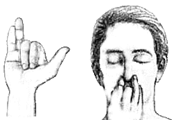

Dechových technik existuje mnoho. Každá se praktikuje za jiných okolností a každá přináší odlišné účinky pro tělo i mysl. Mezi nejznámější pránájámické techniky patří:
Chceš poznat jejich význam a způsob praktikování podrobněji? Vydej se na blog.
Až dorazíš na samotný závěr, nezapomeň kliknout ;)